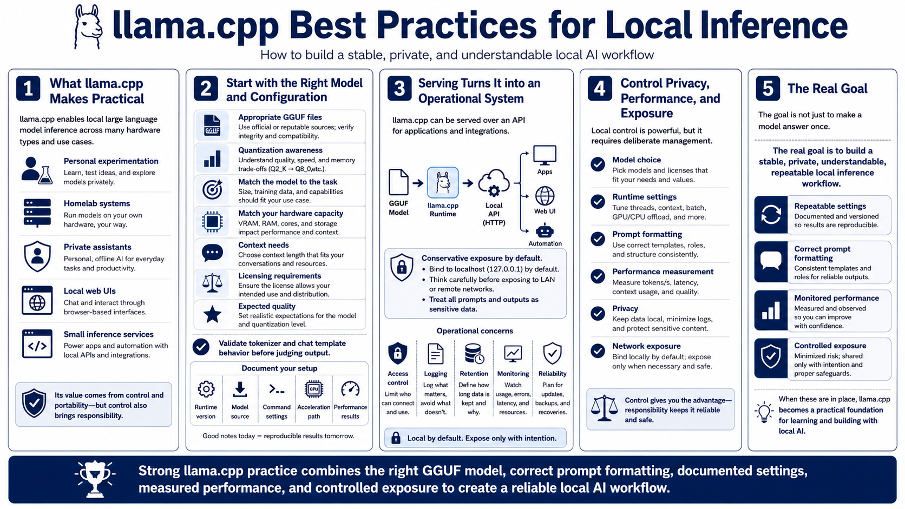

Course Summary and Key Takeaways
Connecting to LMS... Progress: in progress

Narration
llama.cpp makes local large language model inference practical across a wide range of hardware. It can support personal experimentation, homelab systems, private assistants, local web UIs, and small inference services. Its value comes from control and portability, but that control brings responsibility for model choice, runtime settings, prompt formatting, performance, privacy, and exposure.
Strong practice starts with appropriate GGUF files and a clear understanding of quantization. Choose models that match the task, hardware, context needs, licensing requirements, and expected quality. Validate tokenizer and chat template behavior before judging output. Document the runtime version, model source, command settings, acceleration path, and performance results.
Serving llama.cpp over an API can make local inference available to applications, but it should be controlled. Use local-only binding by default for private experiments, think carefully before allowing LAN or remote access, and treat prompts and outputs as sensitive. The moment a model becomes a service, access control, logging, retention, monitoring, and reliability matter.
The goal is not just to make a model answer once. The goal is to build a stable, private, understandable local inference workflow. When settings are repeatable, prompts are formatted correctly, performance is monitored, and exposure is controlled, llama.cpp becomes a practical foundation for learning and building with local AI.